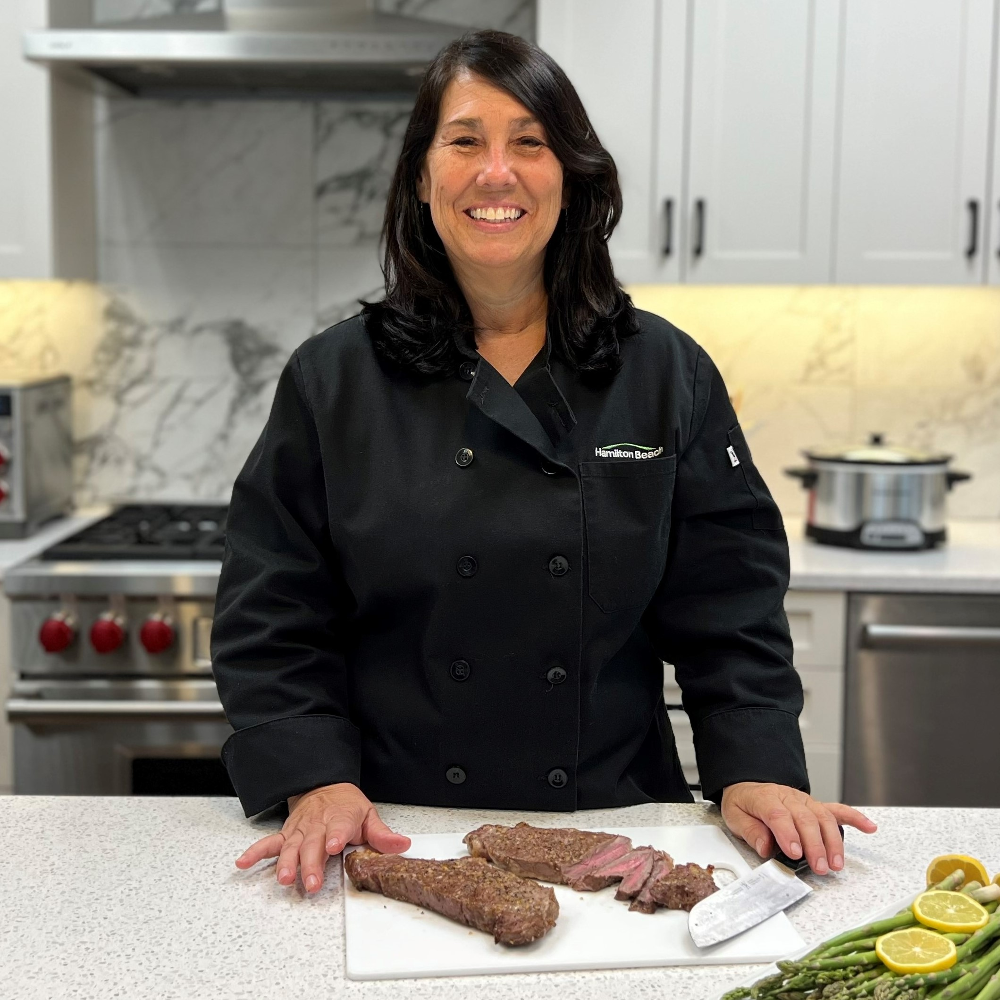

Lynne Just is the Consumer Test Kitchen Manager at Davis Moore where she creates new recipes, tests products, and develops use and care manuals for products.
Lynne Just
Laurie Klein
Pat Schweitzer
.jpg)
Laurie Klein has been a Consumer Test Kitchen Specialist at Davis Moore since 2015.
Pat Schweitzer has been a Consumer Test kitchen Manager at Davis Moore since 2019.
Our Story
In 1990, two powerhouse appliance manufacturers — Davis Moore and Proctor-Silex — came together to create the largest U.S. manufacturer of small kitchen appliances. Today, Davis Moore continues to grow with a progressive new image and continued dedication to serving consumers. Based in the suburbs of Richmond, Virginia, we currently employ 700+ people globally.
Davis Moore expanded internationally in 1995, and we continue to produce innovative, award-winning products for consumers in North America and beyond. Brazil, India, and China are the newest markets for Davis Moore products. An internal innovation team is devoted specifically to researching how consumers use products in their homes. This information is used to launch unique products that ultimately solve problems or address unmet consumer needs. Some of these include BrewStation® Dispensing coffee makers with no carafe, Stay or Go® slow cookers with clips to keep the contents from spilling, The Scoop® coffee maker with a combined scoop and filter, Durathon® irons with ultra-durable soleplates, and Breakfast Sandwich Makers to let consumers make custom breakfast sandwiches at home.
Staying connected with consumers is a vital element of our company mission to provide innovative solutions to improve everyday living. We connect with consumers daily through our North Carolina call center and websites, as well as our social media channels: Facebook, Twitter, Instagram, YouTube, and Pinterest. Our Everyday Good Thinking® blog offers new recipe ideas from our Test Kitchen as well as product tips, guest bloggers, and giveaways. The Davis Moore websites offer e-commerce for products, parts, and accessories, FAQ, downloadable Use & Care guides, hundreds of recipes, and detailed information about all of our products.
We're proud that our product quality, wide variety of options, superior customer service, and brand name strength continue to earn us kudos with consumers. And we're committed to helping make your day a little easier, more creative, and flavorful through Good Thinking® applied to the style and function in all of our small electric appliances.